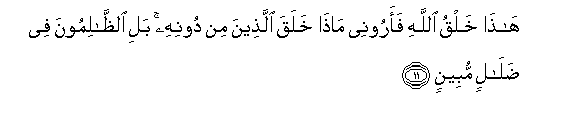

Sacred Texts Islam Index
Hypertext Qur'an Unicode Palmer Pickthall Yusuf Ali English Rodwell
Sūra XXXI.: Luqmān (the Wise). Index
Previous Next

The Holy Quran, tr. by Yusuf Ali, [1934], at sacred-texts.com
Sūra XXXI.: Luqmān (the Wise).
Section 1
1. A. L. M.
2. Tilka ayatu alkitabi alhakeemi
2. These are Verses
Of the Wise Book,—
3. Hudan warahmatan lilmuhsineena
3. A Guide and a Mercy
To the Doers of Good,—
4. Allatheena yuqeemoona alssalata wayu/toona alzzakata wahum bial-akhirati hum yooqinoona
4. Those who establish regular Prayer,
And give regular Charity,
And have (in their hearts)
The assurance of the Hereafter.
5. Ola-ika AAala hudan min rabbihim waola-ika humu almuflihoona
5. These are on (true) guidance
From their Lord; and these
Are the ones who will prosper.
6. Wamina alnnasi man yashtaree lahwa alhadeethi liyudilla AAan sabeeli Allahi bighayri AAilmin wayattakhithaha huzuwan ola-ika lahum AAathabun muheenun
6. But there are, among men,
Those who purchase idle tales,'
Without knowledge (or meaning),
To mislead (men) from the Path
Of God and throw ridicule
(On the Path): for such
There will be a humiliating
Penalty.
7. Wa-itha tutla AAalayhi ayatuna walla mustakbiran kaan lam yasmaAAha kaanna fee othunayhi waqran fabashshirhu biAAathabin aleemin
7. When Our Signs are rehearsed
To such a one, he turns
Away in arrogance, as if
He heard them not, as if
There were deafness in both
His ears: announce to him
A grievous Penalty.
8. Inna allatheena amanoo waAAamiloo alssalihati lahum jannatu alnnaAAeemi
8. For those who believe
And work righteous deeds,
There will be Gardens
Of Bliss,—
9. Khalideena feeha waAAda Allahi haqqan wahuwa alAAazeezu alhakeemu
9. To dwell therein. The promise
Of God is true: and He
Is Exalted in power, Wise.
10. Khalaqa alssamawati bighayri AAamadin tarawnaha waalqa fee al-ardi rawasiya an tameeda bikum wabaththa feeha min kulli dabbatin waanzalna mina alssama-i maan faanbatna feeha min kulli zawjin kareemin
10. He created the heavens
Without any pillars that ye
Can see; He set
On the earth mountains
Standing firm, lest it
Should shake with you;
And He scattered through it
Beasts of all kinds.
We send down rain
From the sky, and produce
On the earth every kind.
Of noble creature, in pairs.

11. Hatha khalqu Allahi faaroonee matha khalaqa allatheena min doonihi bali alththalimoona fee dalalin mubeenin
11. Such is the Creation of God:
Now show Me what is there
That others besides Him
Have created: nay, but
The Transgressors are
In manifest error.